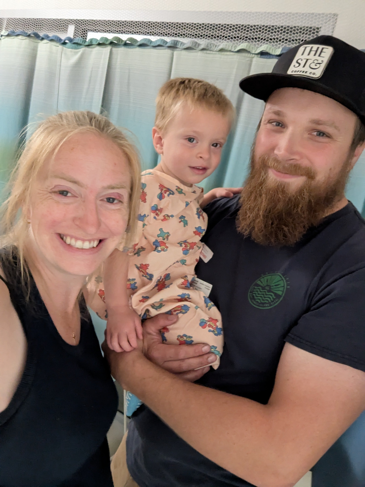
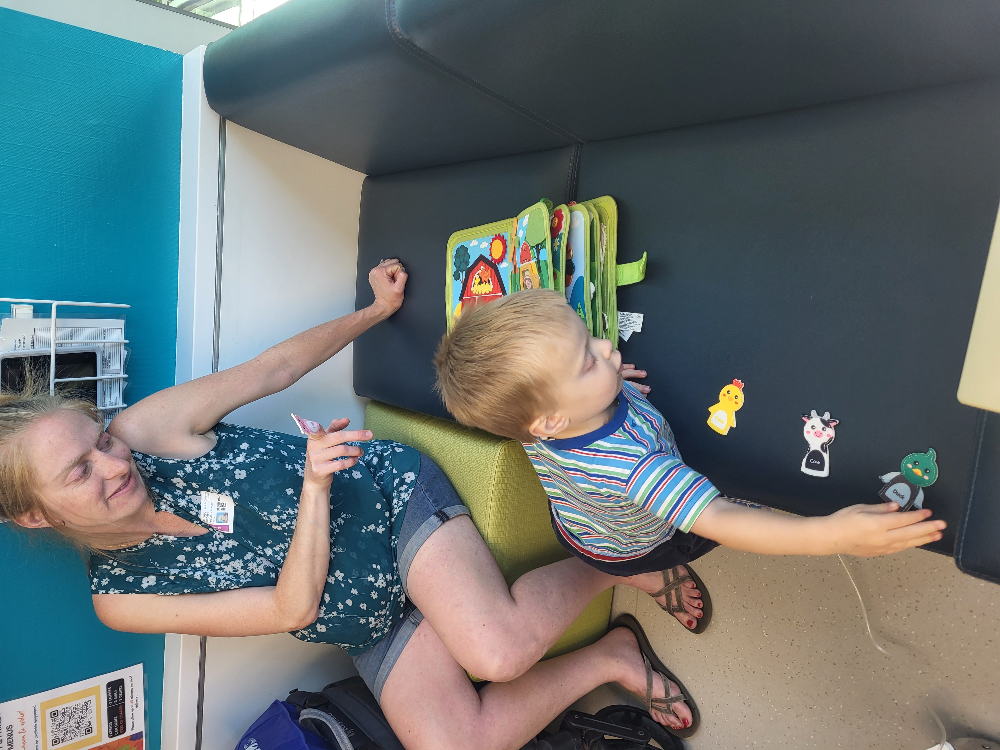

Round 1 Infusions and Sundries
June 18, 2026
Our hearts are tired, but full. The news we have received so far this week has been a mix of good and unclear news. So far we haven't received any bad news, but we have a long road ahead of us. This is just the beginning of our journey, so we are preparing ourselves mentally and spiritually for the days to come.
Tuesday (6/16) was a hard day. Micaiah had a port put in place to make blood draws and infusions much easier on him in the future. This involved a surgery that put an access point (Port-a-Cath) in his chest that connects to a large vein, allowing future venous access without constant pricks. To my ears, this sounded like quite the delicate procedure and was more than a little stressful, but there were no complications.

Getting ready for surgery
While he was still anesthetized, they took a bilateral bone marrow sample and spinal fluid sample. These were precautionary checks to see whether the cancer had metastasized. The spinal fluid sample came back negative, for which we are thankful. We have yet to hear about the marrow, and we expect to get results next week.
The hardest moment so far came that day. When Micaiah woke up, they were taking an X-ray to ensure the port had been placed properly. He was a brave little guy up until the point he saw us walk into the room. Once mom was in sight, it was time to let loose. We came over to console him, but he was very upset. His distress came from somewhere in the Venn diagram between all the wires and tubes, hunger from not eating for 12 hours, and possibly some pain from the procedures. Seeing him so distraught was challenging for both of us, but food, mom snuggles, and disconnecting from medical equipment were an effective therapy for him.
Wednesday (6/17) was much less challenging. The MRI full results did come back, and they were potentially concerning though inconclusive. The tumor he has in both eyes is quite developed. The main concern in the MRI is the left eye. There is a bright spot on his left optic nerve that could indicate cancer, but that is not certain. Many things could return a bright spot on an MRI. Part of the problem is that both eyes have very developed tumors. The doctor was explaining that if a tumor of that size was in only one eye, they would typically remove it right away. The complication is that not all tumors respond to the chemo treatment equally. It's possible that the left eye will respond excellently while the right eye doesn't respond. Were that to happen, they would want to remove the right eye. Since they weigh the importance of vision in life, they did not feel it would be prudent to remove the left eye (with the inconclusive results) at least until they see how both eyes begin to respond to treatment.
At this point, the MRI news for the eyes is no better and no worse than what we heard in the preliminary results. It is still possible to save both eyes, and it is still possible to lose both eyes. Our prayer is that the treatment would be miraculously effective. We did clarify with the doctor about his vision. It was unclear to us whether—assuming he gets to keep both eyes—the vision in his left eye would be permanently affected. There are no promises or guarantees, but it is within the realm of medical possibilities that he could recover some vision in that left eye if all goes well.
As we have spelled out before, we will accept God's will whatever it may be. But the LORD is a God of miracles, and he promises that in His kingdom the blind will see. We remind Him of His promises, knowing that both His promises and our cause are just.

Getting his first infusion
The first day of chemo was reassuring. This whole time has been stressful because we've been eager to get him the treatments he needs to get better. Starting chemo helped to give us the confidence that he's getting every bit help his body can handle. It was also good to have context for how the infusions would go. He was very much his normal self while the drugs were administered, and he was able to play with toys and with us while we were waiting for the drips to finish. The biggest challenge we faced for that day was that he was maxing out sleep-wise as the drips were nearing the end.
On Thursday (6/18), Micaiah had a precautionary MRI for his spine and one infusion. He went under anesthesia for the MRI, but the port removed the necessity of using a mask and made it so much easier. We were able to hold him while he fell asleep and be there in the recovery room as he woke up again. After the MRI, we hustled across the complex for his infusion. Rather than being there four or five hours like Wednesday, we only had one infusion that took less than two hours. He was a champ and took it all so well.
Watching Micaiah over the past few days has been hard, but edifying. He is such a brave boy, and he is handling everything well. We are encouraged by his resilience and the bravery he is showing. They say courage and humility are the first of all virtues. I find that to be true, and I am encouraged by seeing them in Micaiah's disposition of trust—even despite his confusing and sometimes distressing circumstances. Please continue to intercede with us for God's promises to be fulfilled in Micaiah.